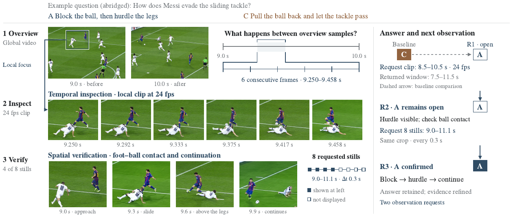
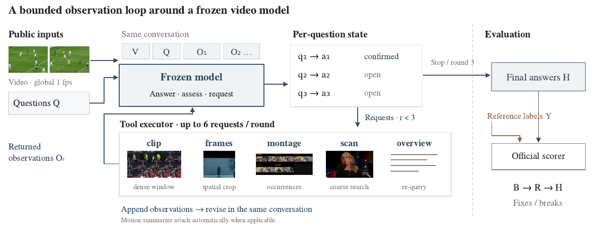

Rethinking Video Agents: When and Why Video Harnesses Work 重思视频智能体：视频 Harness 何时以及为何有效
Using Video-Relook across models and benchmarks, we show that video harnesses succeed when opportunities for informative observation align with a model's ability to seek evidence and revise reliably.
基于 Video-Relook 框架跨模型与跨任务实证分析，揭示视频 Harness 生效的关键在于“高信息量观测机会”与“模型证据获取及可靠修正能力”的匹配。

Abstract摘要
Video understanding depends not only on how models reason about visual evidence, but also on which evidence they observe. Fixed observation policies determine this evidence in advance; agentic harnesses allow models to seek further observations as their understanding develops. Yet the ability to request observations does not ensure their effective use.
Using Video-Relook as an experimental framework, we let models adapt temporal and spatial observations from a common default configuration and analyze performance and interaction trajectories across models and tasks. Adaptive observation yields gains up to 14.2 points on fine-grained actions and extends to Video-MME-v2 (+3.78, +1.91, and +5.25 points on Gemini 3.8 Flash, Gemini 3.6 Flash, and Qwen 3.8 Flash), while revealing sharp cross-model and cross-task variations driven by error recovery, regression, and stopping behavior.
视频理解不仅取决于模型如何推理，还取决于模型观测到了哪些视觉证据。我们基于 Video-Relook 框架让模型从统一默认配置出发自主调整时空观测，系统分析多模型与多任务下的收益与轨迹：自适应观测在细粒度动作上最高提升 14.2 分，并泛化至 Video-MME-v2；同时揭示 harness 的真实收益取决于观测机会与模型纠错、防退化及停止策略之间的协同。
Video-Relook FrameworkVideo-Relook 实验框架

Video-MME-v2 Results (Baseline → Harness)Video-MME-v2 实验结果（基线 → Harness）
| Subset | N | Gemini 3.8 Flash | Gemini 3.6 Flash | Qwen 3.8 Flash | Qwen 3.7 Flash |
|---|---|---|---|---|---|
| Overall | 3,200 | 74.56 → 78.34 | 70.84 → 72.75 | 59.88 → 65.13 | 53.16 → 53.16 |
| Action & Motion | 282 | 54.96 → 59.22 | 49.65 → 55.32 | 41.49 → 50.71 | 34.40 → 31.91 |
| Physical World Reasoning | 298 | 51.34 → 65.10 | 45.97 → 45.64 | 35.23 → 41.28 | 29.53 → 26.85 |
| Frame-Only | 575 | 78.78 → 85.91 | 78.78 → 81.39 | 76.87 → 82.61 | 73.04 → 72.70 |
| Order | 343 | 84.26 → 86.88 | 82.22 → 82.22 | 72.89 → 80.47 | 72.59 → 70.55 |
| Temporal Reasoning | 182 | 79.12 → 80.77 | 70.88 → 74.73 | 68.13 → 67.58 | 47.80 → 53.30 |
Citation引用格式
@article{zhang2026rethinking,
title = {Rethinking Video Agents: When and Why Video Harnesses Work},
author = {Keye Video Team},
journal = {arXiv preprint},
year = {2026},
url = {https://keye-video.github.io/rethinking-video-agents/}
}